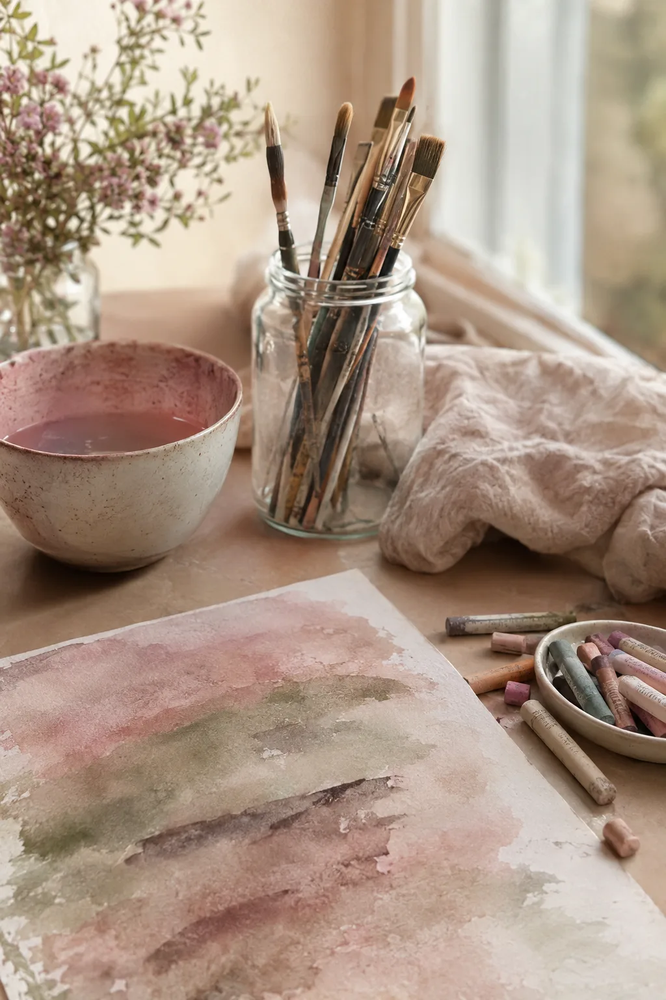
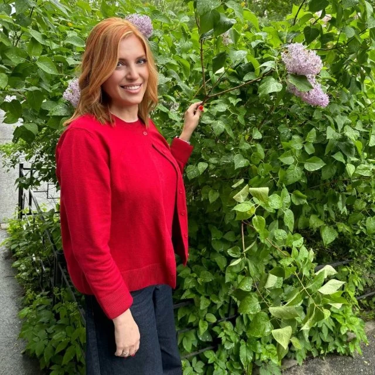

Виктория Тишкова · Санкт-Петербург
Слова, город и цвет.
Английский и немецкий, прогулки по Петербургу и арт-терапия — три пути, чтобы услышать мир и себя чуть яснее.
Направления
Три ремесла — одно внимание
Я соединяю то, что люблю больше всего: живой язык, город, в котором выросла, и искусство как способ говорить о сложном без слов. Каждая встреча — индивидуальная, в спокойном темпе и с уважением к вашей истории.
01 — Репетитор
Английский
& немецкий
Занятия, на которых язык перестаёт быть предметом и становится голосом. Разговорная практика, подготовка к экзаменам и переезду, деловая лексика — под ваши цели и темп.
- Разговорный язык и произношениеA1 — C1
- IELTS, TOEFL, Goethe-Zertifikatподготовка
- Для работы и релокациибизнес-курс
от 1 500 ₽ / 45 мин · онлайн и очно
02 — Гид
Петербург,
который шепчет
Авторские прогулки без спешки и заученных текстов: дворы-колодцы, литературные адреса, мосты на закате и истории людей, которые жили за этими окнами. Можно на русском, английском или немецком.
3 часа
обзорная экскурсия
от 5 000 ₽
за экскурсию
от 5 000 ₽ / обзорная, 3 ч
«Каждый новый язык — это новое окно, через которое видишь мир. А рисунок — окно внутрь себя».
Философия студии

03 — Психология
Арт-терапия:
говорить цветом
Бережная работа с тревогой, выгоранием и эмоциональными состояниями через рисунок, коллаж и метафорические карты. Не нужно уметь рисовать — важен процесс и то, что он открывает.
- i.
Знакомство и запрос
Спокойно обсуждаем, с чем вы пришли и чего хотите.
- ii.
Творческий процесс
Краски, глина, коллаж — материал подбираем вместе.
- iii.
Осмысление
Разговор о том, что проявилось, и что с этим делать дальше.
от 2 000 ₽ / 60 мин
Обо мне
Меня зовут Виктория. Я слушаю — на трёх языках.
Преподаю английский и немецкий, провожу экскурсии по Санкт-Петербургу и занимаюсь арт-терапией. Верю, что обучение, путешествие и терапия держатся на одном — на доверии и внимании к человеку.
- урок языка
- 45 мин
- экскурсия
- 3 ч
- арт-сессия
- 60 мин
Вопросы
Коротко о важном
Как проходит первая встреча?
Это бесплатное знакомство на 20–30 минут онлайн: обсуждаем ваши цели, уровень или запрос, и я предлагаю формат, который подойдёт именно вам.
Можно заниматься онлайн из другой страны?
Да, языковые занятия и арт-терапевтические сессии проходят онлайн в Zoom или Telegram. Экскурсии — очно в Санкт-Петербурге.
Нужно ли уметь рисовать для арт-терапии?
Совсем нет. Мы не оцениваем результат — работаем с процессом, ощущениями и смыслами. Все материалы я предоставляю.
Проводите ли вы экскурсии на иностранных языках?
Да, на английском и немецком — это отличный вариант и для гостей города, и для тех, кто хочет попрактиковать язык в живой среде.
Запись
Начнём с разговора

Виктория Тишкова
отвечу лично
Оставьте заявку — я отвечу в течение дня и предложу удобное время для бесплатной встречи-знакомства.